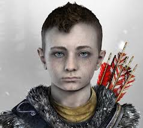
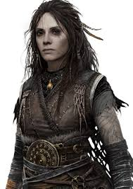
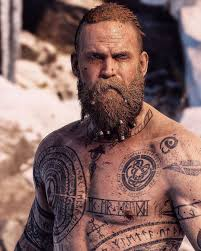
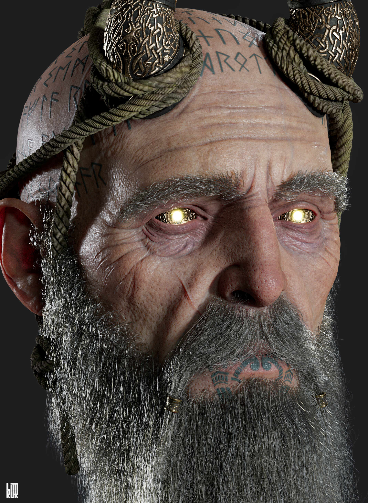

A REDENÇÃO DE KRATOS
A SAGA COMPLETA


Personagens

Kratos
O Fantasma de Esparta

Atreus
O Filho de Kratos

Freya
A Bruxa do Bosque

Anões
Os Anões Ferreiros

Baldur
O Estranho...

Mimir
O Homem Mais Inteligente Vivo
Um Novo Começo
Depois da luta contra Zeus, Kratos acorda em terras gélidas e começa uma nova família, contudo, a morte de sua esposa o leva a buscar o pico mais alto dos nove reinos. Kratos conseguirá superar seus desafios ou mais uma vez ficará preso aos fantasmas do passado? Descubra em God of War